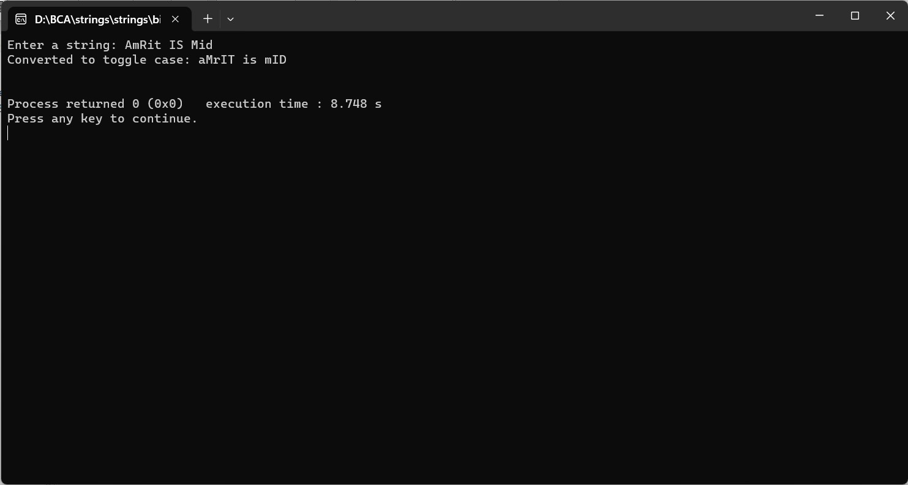

ENTER THE STRING FROM USER AND CONVERT INTO TOGGLE CASE
#include
#include
#include
void toToggleCase(char *str) {
int length = strlen(str);
for (int i = 0; i < length; i++) {
if (isalpha(str[i])) {
if (islower(str[i])) {
str[i] = toupper(str[i]); // If it's lowercase, convert to uppercase.
} else if (isupper(str[i])) {
str[i] = tolower(str[i]); // If it's uppercase, convert to lowercase.
}
}
// Do nothing if it's not an alphabet character.
}
}
int main() {
char input[1000];
printf("Enter a string: ");
fgets(input, sizeof(input), stdin);
toToggleCase(input);
printf("Converted to toggle case: %s\n", input);
return 0;
}
